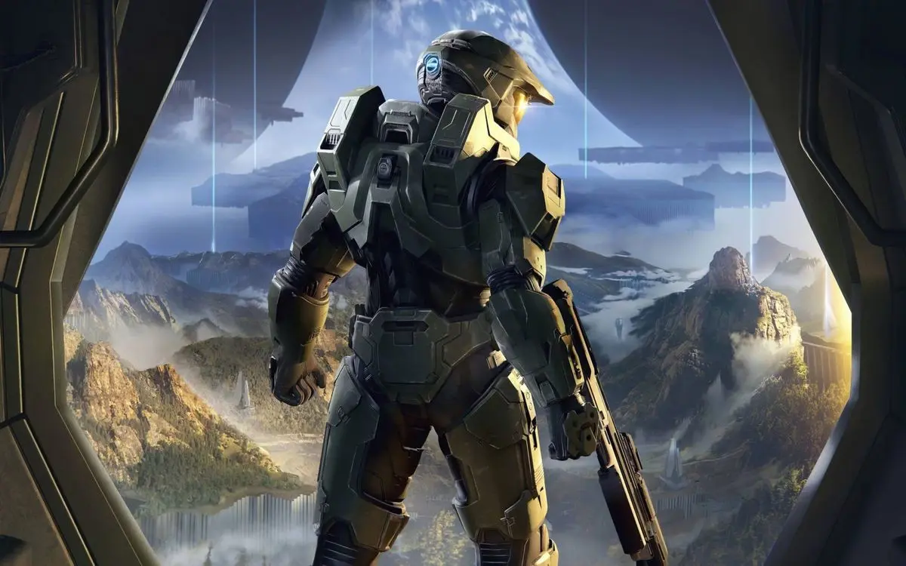

En el siglo XXVI, la humanidad se encuentra al borde de la extinción total. Acorralada por la imparable cruzada fanática del Covenant —una poderosa alianza alienígena decidida a erradicar a nuestra especie— la última línea de defensa de la Tierra descansa sobre los hombros de una leyenda: el Jefe Maestro, John-117.
Acompañado por la inteligencia artificial Cortana, este supersoldado del programa SPARTAN-II se adentrará en las profundidades del espacio para librar una batalla desesperada. Sin embargo, la guerra contra el Covenant es solo el comienzo. En los confines de la galaxia descansan los anillos Halo, colosales megaestructuras creadas por la antigua civilización Forerunner que ocultan un propósito aterrador: armamento capaz de purgar toda la vida sensible para contener a una plaga parasitaria voraz conocida como el Flood.